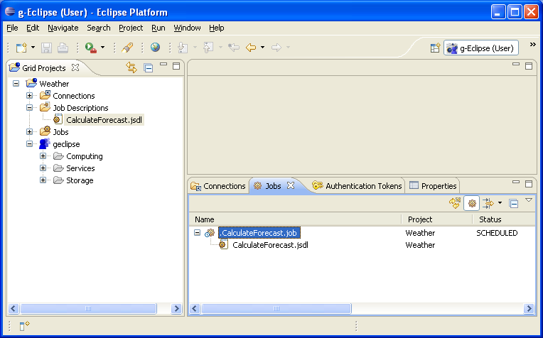

In "Grid Projects" view select created job description, right-click on it the and select Submit.... A dialog opens up where you can choose from a number of Workload Management Servers (WMS) to submit your job to. Pick a WMS server and click Finish to submit the job.
You can see your submitted job appear in the Job folder in your Grid Project: 